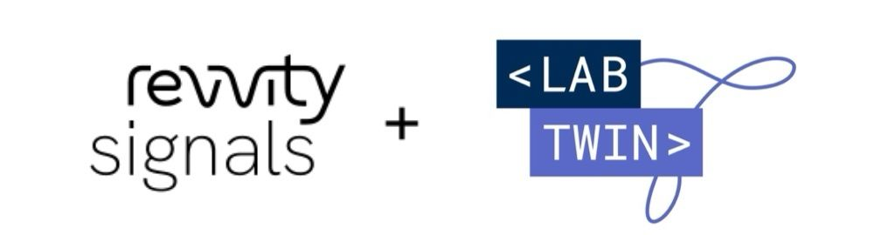

LabTwin GmbH
LabTwin builds voice AI assistants for laboratory scientists, enabling hands-free data capture during experiments.
Voice AI for Labs • Technical Product Manager • Jan 2023 - Nov 2024

Inventory System Integration
Drove LabTwin voice assistant integration with Revvity Signals, enabling hands-free inventory management for scientists.
Voice Tech
Product Mgmt
train
Monthly Release Train
Moved from quarterly to monthly releases by aligning QA, CS, Sales, and Marketing around a predictable cadence.
Process Change
Cross-functional
psychology
LLM Intent Recognition
Championed the company's first LLM adoption, replacing regex with GPT-3.5 to dramatically reduce false negatives.
LLM
Voice UX
First LLM Project